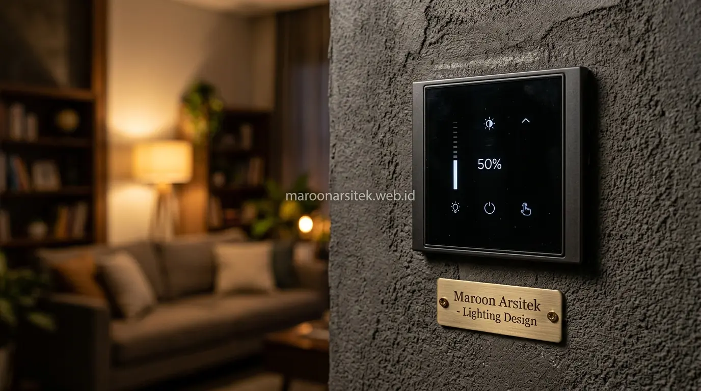

Interior rumah modern yang hidup memanfaatkan integrasi cahaya alami melalui bukaan dan skylight, dilengkapi kontrol intensitas cahaya buatan yang fleksibel, serta penyesuaian kebutuhan lighting pada setiap zona ruang sesuai fungsinya masing-masing. Maroon Arsitek merancang sistem pencahayaan yang menggabungkan ketiga pendekatan ini agar interior tidak lagi terasa suram akibat penempatan lampu yang tidak tepat melalui layanan jasa desain interior custom di Jakarta dan sekitarnya.
Ketergantungan berlebihan pada pencahayaan buatan tanpa memaksimalkan cahaya alami sering menjadi penyebab ruang terasa kurang hidup, terutama pada siang hari ketika seharusnya cahaya matahari dapat dimanfaatkan secara optimal. Bersama tim jasa arsitek rumah tinggal, bagian berikut menguraikan pendekatan lighting yang melengkapi kebutuhan pencahayaan interior rumah modern.
Integrasi Cahaya Alami melalui Bukaan dan Skylight
Integrasi cahaya alami melalui penempatan bukaan jendela yang strategis dan penambahan skylight pada area tertentu membantu memaksimalkan pencahayaan siang hari, mengurangi ketergantungan pada lampu buatan sekaligus menghadirkan kesan ruang yang lebih hidup dan segar. Pendekatan ini menjadi dasar sebelum mempertimbangkan pencahayaan buatan tambahan dalam konsep desain rumah minimalis modern.
Skylight sangat efektif diterapkan pada area rumah yang jauh dari dinding luar, seperti ruang tengah pada rumah dengan denah memanjang, di mana cahaya alami sulit menjangkau tanpa bantuan bukaan tambahan dari bagian atas bangunan.
Penempatan bukaan jendela mempertimbangkan arah datangnya sinar matahari sepanjang hari, menghindari paparan panas berlebihan pada siang hari sambil tetap memaksimalkan pencahayaan alami yang masuk ke dalam ruang secara optimal, sebagaimana diterapkan pada berbagai karya di galeri portofolio Maroon Arsitek.
Penempatan Skylight pada Area Jauh dari Dinding Luar
Kebutuhan pencahayaan pada area tengah rumah dijawab melalui penempatan skylight yang strategis, menghadirkan sumber cahaya alami tambahan pada ruang yang secara struktural sulit dijangkau oleh cahaya dari jendela dinding samping.
Penempatan ini efektif terutama untuk rumah dengan denah memanjang atau ruang tengah yang terkurung oleh ruang lain di sekelilingnya, memberikan solusi pencahayaan alami tanpa memerlukan perubahan besar pada tata ruang yang sudah ada, baik saat pembangunan dari nol maupun tahap renovasi rumah tinggal.
Penggunaan Dimmer dan Kontrol Intensitas Cahaya
Penggunaan dimmer memungkinkan penyesuaian intensitas cahaya buatan sesuai kebutuhan aktivitas dan waktu, memberikan fleksibilitas suasana ruang yang tidak dapat dicapai melalui pencahayaan dengan intensitas tetap. Kontrol ini menjadi solusi bagi ruang yang membutuhkan suasana berbeda pada waktu yang berbeda sepanjang hari.
Dimmer memungkinkan ruang yang sama berfungsi optimal untuk aktivitas yang membutuhkan pencahayaan terang di siang hari, sekaligus dapat diredupkan untuk menciptakan suasana santai pada malam hari tanpa perlu mengganti sistem pencahayaan yang sudah terpasang saat dipadukan dengan furniture interior custom.
Penempatan sistem dimmer pada titik-titik strategis, seperti ruang keluarga dan kamar tidur, memberikan kontrol penuh bagi penghuni untuk menyesuaikan suasana ruang sesuai kebutuhan dan preferensi pada momen tertentu.

Fleksibilitas Suasana Ruang melalui Pengaturan Intensitas
Kebutuhan fleksibilitas suasana dijawab melalui pengaturan intensitas cahaya yang dapat disesuaikan kapan saja, memungkinkan satu ruang yang sama menghadirkan suasana berbeda tanpa memerlukan perubahan desain atau penambahan titik lampu baru.
Fleksibilitas ini memberikan nilai tambah signifikan pada interior modern, karena penghuni dapat menyesuaikan suasana ruang sesuai kebutuhan momen tertentu, seperti suasana santai saat berkumpul keluarga di malam hari atau saat menata interior apartemen studio multifungsi.
Perbedaan Kebutuhan Lighting Antar Zona dalam Satu Rumah
Setiap zona dalam rumah memiliki kebutuhan lighting yang berbeda sesuai fungsinya, di mana area kerja membutuhkan pencahayaan lebih terang dan merata dibanding area bersantai yang lebih cocok dengan pencahayaan hangat dan redup. Pemahaman perbedaan ini penting agar sistem lighting yang dirancang benar-benar sesuai kebutuhan setiap area.
Zona kerja atau dapur memerlukan pencahayaan dengan tingkat kejelasan visual tinggi untuk mendukung aktivitas yang membutuhkan detail, sementara zona kamar tidur lebih membutuhkan pencahayaan lembut yang mendukung relaksasi menjelang waktu istirahat dengan standar pengerjaan rapi dari jasa interior rumah bergaransi.
Transisi pencahayaan antar zona dirancang agar tidak terlalu kontras, sehingga perpindahan dari satu area ke area lain tetap terasa nyaman tanpa perubahan intensitas cahaya yang terlalu drastis dan mengganggu kenyamanan visual penghuni.
Penyesuaian Tingkat Kejelasan Visual sesuai Aktivitas Zona
Kebutuhan pencahayaan yang sesuai aktivitas dijawab melalui penyesuaian tingkat kejelasan visual pada setiap zona, memastikan area yang membutuhkan detail visual tinggi mendapat pencahayaan memadai tanpa mengorbankan kenyamanan pada area yang berfungsi untuk relaksasi.
Penyesuaian ini menjadi bagian dari perencanaan menyeluruh sistem lighting rumah, memastikan setiap zona mendapat pencahayaan yang tepat guna tanpa penyeragaman intensitas yang justru mengurangi kenyamanan pada beberapa area tertentu. Estimasi pemasangan instalasi MEP dan armature lampu berkualitas dapat disesuaikan dalam dokumen RAB pembangunan rumah terperinci sejak awal perencanaan.